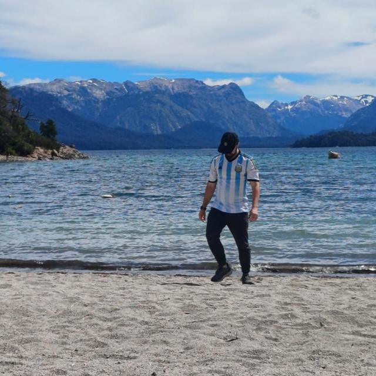

🎬 Películas favoritas
La pistola desnuda (1988)
Airplane! (1980)
Avengers: Endgame (2019)
💿 Discos favoritos
Delivering the Black (2014)
Primal Fear
Holy Hell (2018)
Architects
Toxicity (2001)
System of a Down
Sobre mí
Hobbies
Música
Videojuegos
Fútbol
Algo sobre mí
Trabajo como analista de gestión de la información y me interesa construir productos de principio a fin, desde el dato crudo hasta la interfaz final, enfocándome en el Backend de los proyectos.